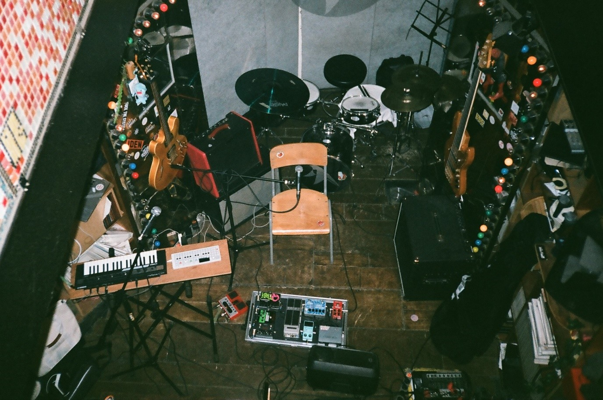
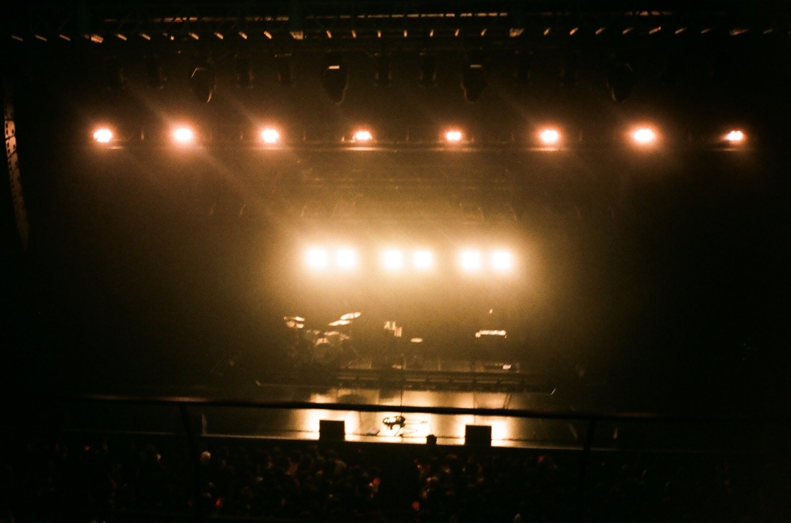
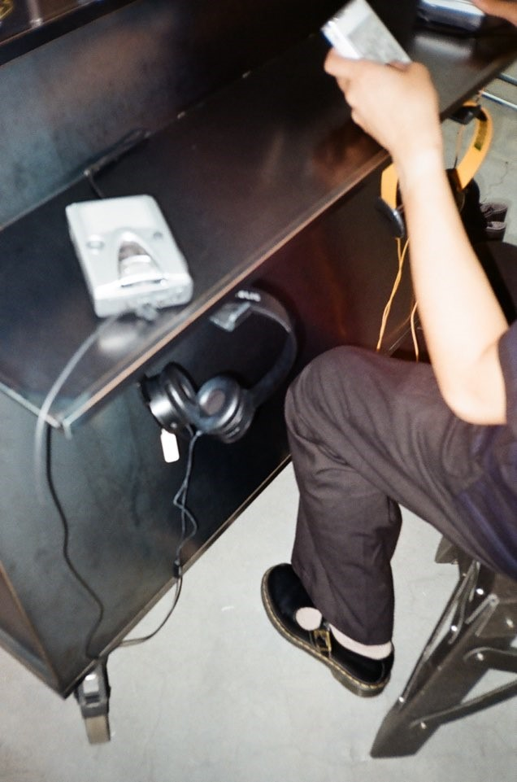

내 취향이면 모조리 다
음악 듣는 걸 좋아한다고 말하면 꼭 돌아오는 질문, 넌 어떤 장르를 좋아하는데?
한참을 고민하다가 대답을 할 때면 이렇게 말했던 것 같다. 내 취향이면 모조리 다 듣는데- 그 중에서도 인디밴드를 가장 사랑해.
장르가 무너지고 있다.
본디 인디음악이란 주류가 되는 상업음악계의 자본과 시스템의 간섭에서 벗어나, 스스로의 삶의 방식과 음악성을 고수하려는 뮤지션의 음악이라고 할 수 있다. 언더그라운드적인 태도로 마주할 수 있었던 한국의 인디음악은 이제, 아직도 비주류라고 정해도 될 지 모를 정도로 실제로 그 규모가 매우 커졌다.
음반 산업이 성장하려면 다양한 장르와 스타일의 뮤지션들이 필수적으로 존재해야 하는데, 그러한 뮤지션들이 현재 광범위하게 포진하고 있는 공간이 인디음악신이다.
수많은 인디뮤지션들이 지상파 방송에도 등장하게 되면서, 폭넓은 대중성까지 획득했음이 증명되고 있다. 사실상 주류와 인디의 경계가 허물어지고 있다.
좋아하는 것을 사랑하는 가장 이상적인 방법
사실 난 인디음악 그 자체보다는 음악과 아티스트를 직접 즐길 수 있다는 형태를 더욱 사랑하는 편이다. 올림픽공원과 같은 큰 규모의 공연, 아티스트의 단독 공연, 홍대 곳곳의 클럽 공연, 작은 카페나 펍에서 열린 음감회까지 여러 공간을 다녀보았고, 그 규모가 어떻든 간에, 아티스트와 잘 어울리는 공간에서 그들과 동화될 수 있다는 게 가장 큰 매력이라고 생각한다.

나처럼, 혹은 나보다 더 라이브 공연을 좋아하는 사람들이 있을 것이다. 내가 친구들에게 ‘라이브 한 번 보면 음원은 더 이상 못 듣는다’는 말을 항상 하는 것처럼 말이다.
라이브는 라이브만의 묘미가 있다. 나는 라이브의 현장감을 특히 매우 사랑한다. 다양하게 편곡된 무대를 만나볼 수 있으며, 생생한 사운드로 겹겹이 쌓여가는 멜로디와 하모니를 두 귀에 직접 담을 수 있다는 점. 반하지 않을 수 없게 된다.
뮤지션의 이미지를 극대화 하는 퍼포먼스 또한 매번 제법 기대하는 요소 중 하나이다. 뜨거운 열기 속, 뮤지션들이 무엇인가에 푹 빠져 연주하는 모습 그 자체가 퍼포먼스가 될 수도 있고, 영상과 조명 그리고 패션 등 그들의 색을 보여주는 방법은 아주 다양하다.
넬, 크리스마스, 2013
내 인생 첫 밴드 공연은 무려 2013년 크리스마스의 넬의 공연이다. 인디밴드의 신화가 된 넬을, 열 여섯 밖에 되지 않았던 내가 어떻게 알고 어떻게 좋아했는지 이젠 기억조차 나지 않지만, 확실한 건 한 가지다. 빽빽하게 모인 사람들 사이에서 귀가 터질 듯한 무대를 본 이후, 내가 밴드 공연에 매료되었다는 것이다.
Instagram, or Further
인스타그램이 정보 수집을 위한 플랫폼으로 기능한지는 꽤나 오래되었다. 나 또한 새로운 아티스트를 발견하고 새로운 음악을 접하는 수단으로 인스타그램을 자주 사용한다. 특히 뮤지션들의 신보와 공연 소식을 빨리 알 수 있다.

그렇지만 언제까지 뮤지션들의 새 공연 소식을 기다리고만 있을 것인가. 우리가 직접 뛰어다니며 새로운 뮤지션들의 무대를 찾아보는 것도 참 매력 있음을 알리고 싶다.
매주 여러 팀의 밴드 공연을 볼 수 있는 클럽FF⸱에반스라운지, 매달 마지막 주 금요일 홍대의 여러 공연장에서 이루어지는 라이브 클럽 데이의 타임테이블을 찾아보며 가슴 졸일 때의 기분은 이루 말할 수 없다.
특히 라이브 클럽 데이 (LIVE CLUB DAY)는 홍대 앞 9개 라이브 클럽과 공연장에서 이루어지는 무경계 음악 축제로, 단 한 장의 티켓으로 다양한 장르를 아우르는 40여 팀의 공연을 자유롭게 즐길 수 있다. 다소 합리적인 가격으로 취향에 맞는 무대를 골라볼 수 있으니, 인디음악을 즐기고 싶은 사람들이라면 가벼운 마음으로 찾아가도 좋을 것이다.
포크라노스 POCLANOS
많은 인디밴드를 알게 되고 좋아하게 된 데에 SNS 디깅이 한 몫을 했다면, ‘포크라노스(POCLANOS)’에 대한 이야기를 빼놓을 수 없다. 포크라노스는 한국 인디음악신의 다양한 흐름을 세상에 전파하며 독창적인 색의 아티스트들과 새로움을 갈구하는 대중들을 연결하는 허브가 되고 있는 디지털 음악 유통사이다.
2017년 ‘EMERGING’이라는 타이틀을 내세우고 발매한 포크라노스의 첫 번째 컴필레이션은 꽤나 반응이 좋았다. 새로운 재능을 가지고, 앞으로 씬에서도 주목 받을 것이 확실한, 특별한 아티스트 열두 팀의 음악이 수록되었는데 실제로 대중들에게도 이 아티스트들을 알리게 되는 큰 계기가 되었다. 그 속에는 현재 뉴 인디신에서 큰 영향력을 가지고 있는 새소년, 오존, 김사월 등이 있었다.
포크라노스는 이런 새로운 형태의 앨범 발매를 넘어서, 다양한 sns를 통해 인디 아티스트들의 신보를 소개하고, 다른 곳에서는 자주 다루지 않는 인디 레이블과 아티스트들의 앨범 작업기와 비하인드를 공개하기도 한다.
또, 내가 가장 좋아하는 코너인 ‘추천의 추천의 추천’은 포크라노스가 추천하는 아티스트가 추천하는 음악을 소개하는데, 아티스트가 좋아하는 것이라면 무엇이든 따라하고 따라 듣고 싶은 팬들의 마음을 콕 집어낸 코너라고 할 수 있다.
나만 아는 가수
혁오. 이제는 이름만 들어도 웬만한 사람들은 고개를 끄덕일 만큼 유명해진 인디밴드 혁오는 2015년 인기 예능에 나온 이후로 이슈가 되었다. 그리고 그 이후, 곧이어 나온 앨범들의 인기가 하늘을 찌를 때, 몇 사람들이 입을 모아 하던 말이 있었다.
‘나만 알던 가수, 나만 알던 아티스트.’
혁오를 통해 주류와 비주류의 경계를 설명할 수 있다고 생각한다. 주류와 비주류의 경계는 사라지고 있다. 그 경계를 허무는 데는 대중매체가 큰 몫을 하고 있다.
일명 비주류였던 혁오가 유명해지기 시작하자, 나만 알고 있던 가수를 놓치는 듯한 기분에 분명 일말의 아쉬움이 존재했을 것이다. 마이너한 감성에 대한 일종의 삐딱한 소유욕이고, 지나치게 폐쇄적이라고 비꼬며 우습게 여기는 의견도 다소 많았을 만큼 말이다.
하지만 어쩌면 당연한 감정이다. 문화적 취향은 그 사람을 규정짓는 요소인 중 하나이기 때문에, 그 취향에 기대어 나타난 묘한 우월감은 우리 모두가 가진 심리가 아닌가. 비주류 리스너 그 자체로 남들과 차별화된 지위를 획득하게 되었다가, 비주류가 주류가 되는 바람에 그들은 얻었던 것을 다시 잃었으니 그럴 수 있다고 생각한다.
그들은 다시 획득하기 위해 끊임 없이 또 다른 새로운 것들을 찾으려 할 것이다. 물론 나도 그렇지 않을까 싶다. 좋아하는 뮤지션이 많은 사랑을 받는다는 것은 분명 응원해야 할 사실이지만 동시에 아쉬운 마음이 드는 건 어쩔 수 없으니 말이다.
Artist
인디음악의 규모가 커지고 뮤지션과 팬의 의식 또한 성장함에 따라 더욱 주목받고 있는 것이 있다. 바로 여성 아티스트들의 행보이다. 언젠가부터 여성 뮤지션들이 ‘여성스러움’과 ‘아름다움’의 기준 속에서 규격화 됐었다고 생각한다. 하지만 이제 인디신에서는 다양한 색을 가진 여성 아티스트들이 존재하고 있으며, 규제 또는 시선에 얽매이지 않고 훌륭한 음악으로 본인의 색을 드러내고 있다. 이건 긍정적인 흐름이라고 볼 수 있다.
사심을 조금 담아, 프런트맨이라는 수식어가 가장 잘 어울리는 새소년의 황소윤을 소개하고 싶다. 어린 여성인 내가, 여성에게 씌워진 틀에 대해 생각을 많이 하고 그것을 최대한 깨트려보고자 하는 어린 여성 아티스트의 영향을 받지 않을 수가 없었다. 창작자로서 또는 새소년으로서 청년으로서, 황소윤으로서 차별에는 저항할 줄 알고 부조리한 것들에 목소리를 낼 수 있는 용기를 가지고 작은 목소리에 귀 기울일 수 있는 그런 아티스트가 되겠다는 그들의 포부. 내가 성장해가며 꾸려갈 세계의 너비가 결코 좁지만은 않았구나 하는 용기도 얻곤 했다.
황소윤의 음악은 어수룩하면서도 성숙한 면모를 보이며 왠지 모르게 숨통이 트인다. 성장통 같은 셈이다. 음악뿐만이 아니라 그의 깨어난 의식과 신념이 담긴 목소리를 더욱 사랑하고자 한다. 이외에도 구속되지 않고 흐려지지 않는 여성 뮤지션들의 행보를 응원한다. 이 문단을 완성하자마자 나도 모르게 깨닫고 말았다. 실은 이게 나의 이상적인 세계이자 내가 비로소 원하는 것이 아니었을까.
그래도 내가 사랑하고 싶은 걸 하자
‘그래도 내가 사랑하고 싶은 걸 하자’는 마인드로 살고 있다. 하고 싶어 하는 일과 해야만 하는 일 사이에서 고르라고 하면, 해야만 하는 일을 하고 싶은 일로 만들어 그 간극을 좁히려고 하지, 하고 싶지 않을 일까지 도맡지 않을 정도로 은근 고집이 있다. 이게 다 내가 사랑하고자 하는 이상을 위한 태도라고 생각한다. 주변에서도 윤경이는 참 윤경이만의 것이 있고, 좋아하는 것으로 일상을 빈틈없이 채우는 모습을 닮고 싶다는 말을 가장 많이 들었다.
내가 사랑하는 것들과 나의 스타일을 꾸준히 구축하기 위해서는 여러 요소들을 경험해 볼 필요가 있는데, 특히 음악은 그 영향력이 아주 크다고 감히 말해 본다. 많은 음악들과 무대들을 즐겨봤고, 뮤지션들을 동경했고, 새로운 사람들과 새로운 이야기들을 나눠봤고, 늘 빠짐없이 기록했다. 아직 내가 누구인지 말로 뱉기에는 어렵지만, 적어도 내가 좋아하는 것들을 표현할 줄 알게 되었다. 이런 과정을 반복하다 보면 비로소 나라는 사람의 이상을 씹고 삼키고 소화할 수 있게 되지 않을까.
언젠가 여름이 그리울 때에
이제 여름의 내음이 완전히 사라졌다. 언젠가 여름의 청량함을 그리워하게 될지도 모른다. 그땐 플레이리스트에 이 곡들을 넣어 보았으면 좋겠다. 듣기만 해도 시원해지는 인디락을 담아냈다.
1. Hippo Campus-simple season
2. Land of Peace-Warm Me
Up/Coastal Night Out
3. SIRL-Cilla
4. 새소년-파도